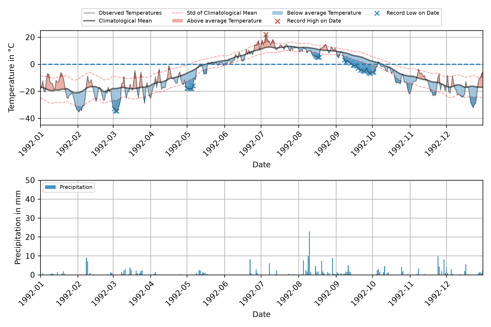
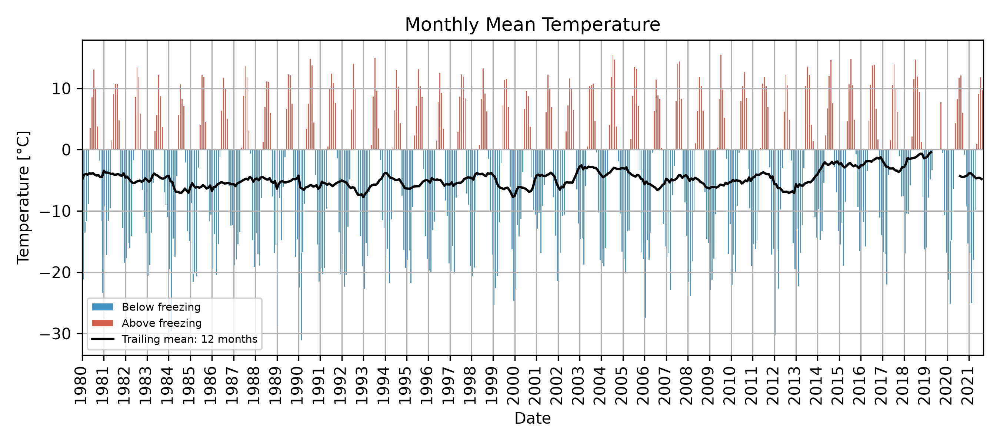
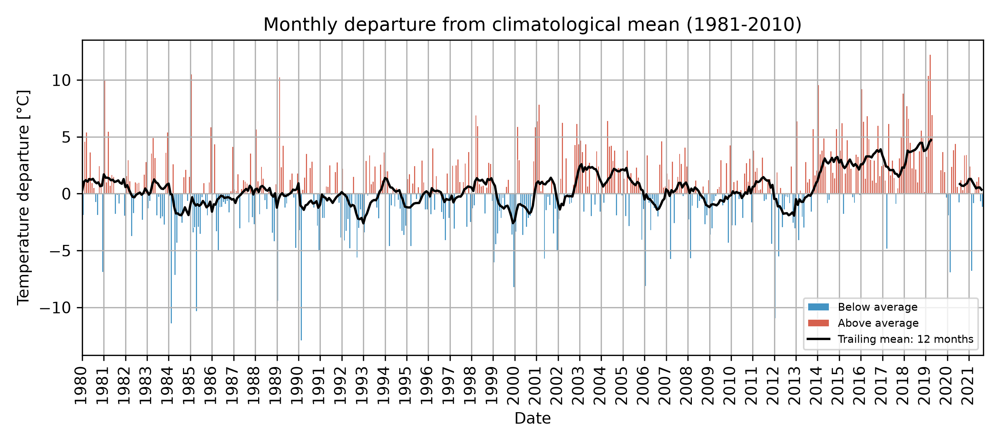
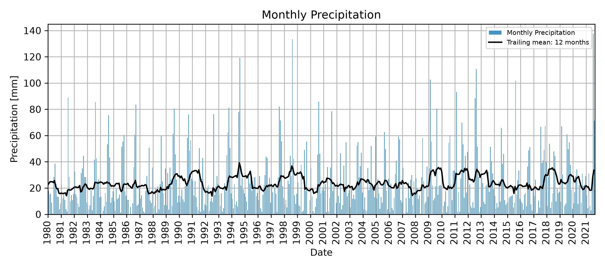
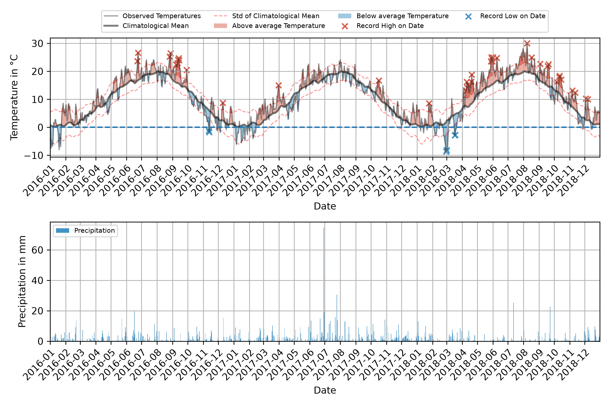

Examples¶
Worked examples, with the intended interpretation of each figure.
Daily plot — static (matplotlib)¶
noaaplotter plot-daily \
-infile data/kotzebue.parquet \
-start 1992-01-01 -end 1992-12-31 \
-t_range -45 25 -p_range 50 \
-save_plot figures/kotzebue_daily_1992.png

Top band — daily mean temperature (grey band = climate normal ± 1σ), record highs as red ticks, record lows as blue ticks. Bottom band — daily precipitation (blue vertical bars) with a 7-day rolling sum (blue line) and a daily precipitation threshold.
Daily plot — interactive (Plotly)¶
noaaplotter plot-daily \
-infile data/kotzebue.parquet \
-start 1992-01-01 -end 1992-12-31 \
--engine plotly \
-save_plot figures/kotzebue_daily_1992.html
Same data, interactive: hover for values, drag to pan, and (with
--full-series) the entire observed record is embedded even when the
initial window is a single year.
Live example — Kotzebue daily, 1992 (interactive):
Winter snowfall — interactive¶
When the window contains snowfall and --snow_acc is set, a
cumulative snowfall axis appears:
noaaplotter plot-daily \
-infile data/kotzebue.parquet \
-start 2017-11-01 -end 2018-03-01 \
--snow_acc \
--engine plotly \
-save_plot interactive/kotzebue_daily_winter.html
Live example — Kotzebue winter 2017/18 (interactive, snow accumulation):
Monthly bar charts¶
Monthly averages with a 12-month trailing mean, as absolute values or anomaly from the climate baseline (1981-2010).
Temperature, absolute:
noaaplotter plot-monthly \
-infile data/kotzebue.parquet \
-start 1980-01-01 -end 2021-08-31 \
-type Temperature -trail 12 \
-save_plot figures/kotzebue_monthly_t.png

Temperature, anomaly:
noaaplotter plot-monthly \
-infile data/kotzebue.parquet \
-start 1980-01-01 -end 2021-08-31 \
-type Temperature -trail 12 -anomaly \
-save_plot figures/kotzebue_monthly_t_anomaly.png

Precipitation, absolute:
noaaplotter plot-monthly \
-infile data/kotzebue.parquet \
-start 1980-01-01 -end 2021-08-31 \
-type Precipitation -trail 12 \
-save_plot figures/kotzebue_monthly_p.png

ERA5 / reanalysis (no API key)¶
noaaplotter also pulls ERA5 reanalysis by coordinates. The
open_meteo source uses Open-Meteo's public archive — no API key, no
account — and is the simplest way to plot a station-less location (e.g. a
city centre, a lake, a remote site).
noaaplotter download-data --source open_meteo \
-lat 52.4 -lon 13.05 \
-start 1980-01-01 -end 2021-12-31 \
-o data/potsdam_ERA5.parquet
noaaplotter plot-daily \
-infile data/potsdam_ERA5.parquet \
-loc "52.40,13.05" \
-start 2016-01-01 -end 2018-12-31 \
-t_range -5 20 -p_range 20 \
-save_plot figures/era5_potsdam_daily.png

Live example — Potsdam ERA5 daily, 2016–2018 (interactive):
Note: for coordinate-based data, the -loc / location= argument is the
coordinate string (e.g. 52.40,13.05), not a human-readable name, because
reanalysis points have no station ID.